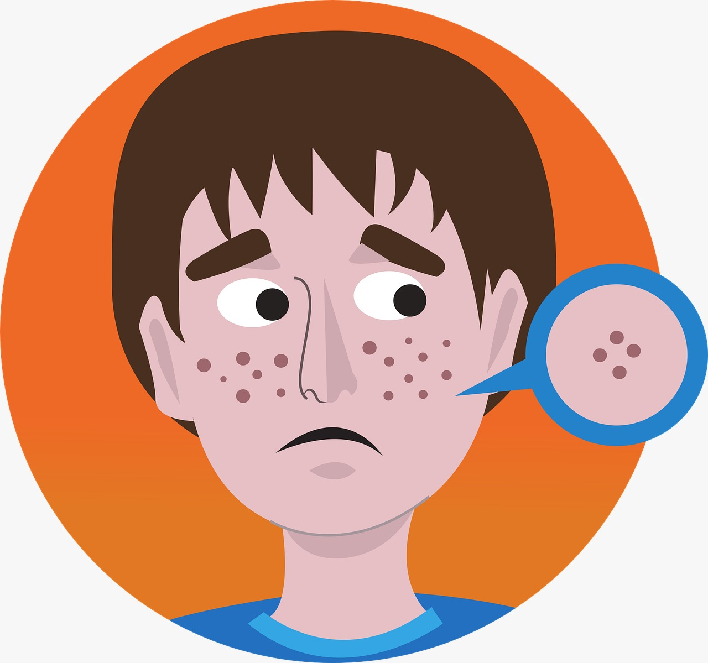
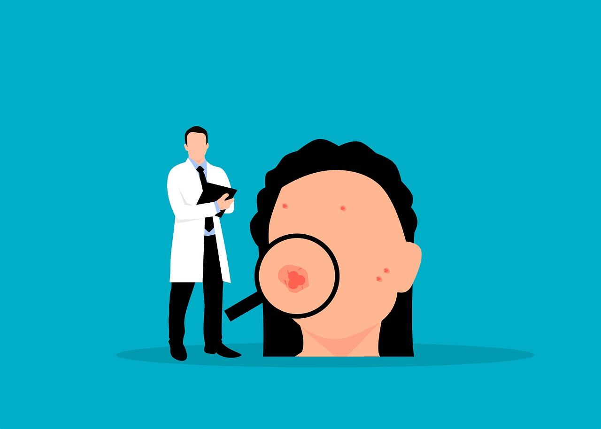

La dermatología es una rama de la medicina que se especializa en el estudio, diagnóstico y tratamiento de enfermedades y trastornos relacionados con la piel, las uñas, el cabello y las mucosas.
Los dermatólogos son médicos que han completado la educación médica básica y luego han seguido una formación adicional en dermatología. Esta formación incluye residencia en dermatología, donde adquieren experiencia en el diagnóstico y tratamiento de una amplia variedad de condiciones cutáneas.
La dermatología abarca una amplia gama de condiciones y enfermedades de la piel, incluyendo acne, dermatitis, psoriasis, cáncer de piel, infecciones cutáneas, alergias cutáneas, trastornos del cabello y las uñas, entre otros.
Los dermatólogos utilizan una variedad de métodos para diagnosticar enfermedades cutáneas, que pueden incluir examen físico, evaluación de la historia clínica del paciente, pruebas de laboratorio, biopsias de piel y pruebas de diagnóstico por imágenes como la dermatoscopia.
El tratamiento en dermatología puede incluir terapias tópicas como cremas y lociones, medicamentos orales, procedimientos quirúrgicos menores como la extirpación de lunares o verrugas, terapias con láser, fototerapia y otros tratamientos especializados según la condición específica del paciente.
Los dermatólogos también desempeñan un papel importante en la educación sobre el cuidado de la piel y la prevención de enfermedades cutáneas. Esto incluye recomendaciones sobre el uso de protector solar, prácticas de cuidado de la piel adecuadas, diagnóstico precoz de lesiones sospechosas de cáncer de piel y educación sobre hábitos de vida saludables para mantener una piel sana.